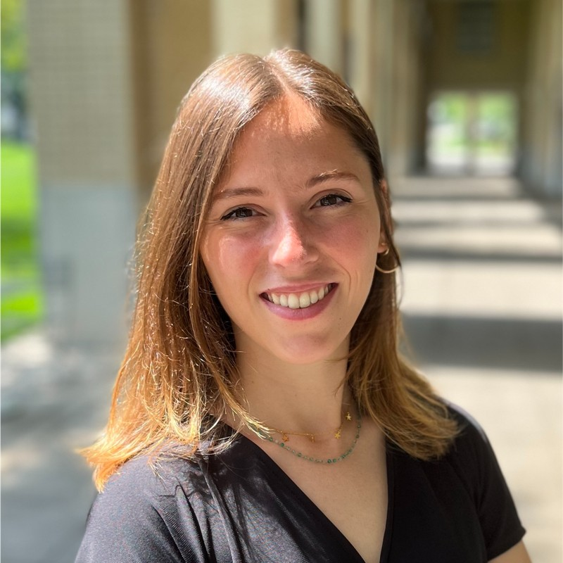

PhD Student in Linguistics
I am a final-year Ph.D. candidate in Linguistics and Computer Science at Aix-Marseille Université, affiliated with both the Laboratoire Parole et Langage (UMR 7309) and the Laboratoire d'Informatique et Systèmes (UMR 7020), supervised by Philippe Blache, Magalie Ochs, Roxane Bertrand and Stéphane Rauzy. I also spent 4 months at Carnegie Mellon University under Professor Louis-Philippe Morency.
My research centers on understanding the mechanisms of communication and mutual comprehension, exploring both behavioral and cognitive dimensions to identify factors that enhance the quality of conversations. Specifically, my thesis work focuses on conversational feedback.
My expertise includes:
I would be delight to connect with anyone interested in discussing my research or exploring collaboration opportunities. Please don't hesitate to reach out to me at auriane.boudin@univ-amu.fr
1.[Boudin, A., Rauzy, S., Bertrand, R., Ochs, M., & Blache, P., Morency, LP. Exploring Listener Variability: A Study of Listening Styles and Alignment in Spontaneous Conversations. In preparation.]
2. Kebe, G. Y., Birlikci, M. D., Boudin, A., A., Ishii, R., Girard, J. M., & Morency, LP. GeSTICS: A Multimodal Corpus for Studying Gesture Synthesis in Two-party Interactions with Contextualized Speech. Under review.
3. Boudin, A., Rauzy, S., Bertrand, R., Ochs, M., & Blache, P. How is Your Feedback Perceived? An Experimental Study of Anticipated and Delayed Conversational Feedback. Under review.
4. [Boudin, A., Bertrand, R., Rauzy, S., Ochs, M., & Blache, P. (2024). A Multimodal Model for Predicting Feedback Position and Type During Conversation. Speech Communication, 103066. (access)]
5. Boudin, A., Bertrand, R., Rauzy, S., Houlès, M., Legou, T., Ochs, M., & Blache, P. (2023, October). SMYLE : A new multimodal resource of talk-in-interaction including neuro-physiological signal. In Companion Publication of the 25th International Conference on Multimodal Interaction (pp. 344-352). (access)
6. [Pellet-Rostaing, A., Bertrand, R., Boudin, A., Rauzy, S., & Blache, P. (2023). A multimodal approach for modeling engagement in conversation. Frontiers in Computer Science, 5, 1062342. (access)]
7. [Ochs, M., Pergandi, J. M., Ghio, A., André, C., Sainton, P., Ayad, E., Boudin, A., & Bertrand, R. (2023). A forum theater corpus for discrimination awareness. Frontiers in Computer Science, 5, 1081586. (access)]
8. [Amoyal, M., Bertrand, R., Bigi, B., Boudin, A., Meunier, C., Pallaud, B., Priego-Valverde, B., Rauzy, S., & Tellier, M. (2022). Principes et outils pour l’annotation des corpus. Travaux Interdisciplinaires sur la Parole et le Langage, 38. (access)]
9. Boudin, A., Bertrand, R., Ochs, M., Blache, P., & Rauzy, S. (2022, June). Are you Smiling When I am Speaking ?. In Proceedings of the Smiling and Laughter across Contexts and the Life-span Workshop@ LREC2022. (access)
10. Boudin, A., (2022, November). Interdisciplinary corpus-based approach for exploring multimodal conversational feedback. In Proceedings of the 2022 International Conference on Multimodal Interaction (pp. 705-710). (access)
11. Boudin, A., Bertrand, R., Rauzy, S., Ochs, M., & Blache, P. (2021). A multimodal model for predicting conversational feedbacks. In International conference on text, speech, and dialogue (pp. 537-549). Springer, Cham. (access)
2022 Arthur Pellet-Rostaing, Second year of Master’s Degree. Project: A multimodal model for estimating engagement at the turn level in human-human conversations (714h). Graduated: July 2022.
10/2021–10/2024 Ph.D. in Linguistics and Computer Science (Aix-Marseille Univ, France).
Thesis: A study of conversational feedback in human/human and human/machine interaction to better understand spontaneous conversation.
Advisors: Philippe Blache and Magalie Ochs.
Funding: Institute of Language Brain and Communication (ILCB).
09/2019–08/2021 Master’s Degree with honors in Cognitive Sciences, Language Communication and Brain (Aix-Marseille Univ, France).
09/2016–08/2019 Bachelor's Degree in Linguistics (Aix-Marseille Univ, France).
05/2023–09/2023 Visiting Scholar at Multicomp Lab (Carnegie Mellon University, Pittsburgh, USA).
Supervisor: Louis-Philippe Morency.
02/2021–06/2021 Development of a generic conversational feedback model at Laboratoire Parole et Langage (Aix-en-Provence, France).
Supervisors: Philippe Blache, Roxane Bertrand, Magalie Ochs, Stéphane Rauzy.
02/2020–04/2020 Comparative study of storytelling situations involving 1) a human and 2) a robot at Laboratoire Parole et Langage (Aix-en-Provence, France).
Supervisors: Noel Nguyen, Giusy Cirillo.
LREC 2022 Workshop at the Language Resources and Evaluation Conference in Marseille, France. Dates: 20-25 June 2022.
Member of the Quality of Life at Work Unit at Laboratoire Parole et Langage, France.
Elected to the Laboratory Council for the PhD student position at Laboratoire Parole et Langage, France.
ILCBS KALEIDOSCOPE: A Collective Journey through Multidisciplinary Insights in Marseille, France. Date: 29 March 2024.
Social Interactions: Implications for Health and Society in Marseille, France. Dates: 27-28 February 2020.
Scientific Mediation: Perception, Representation, and Interpretation in Aix-en-Provence, France. Date: 12 April 2019.